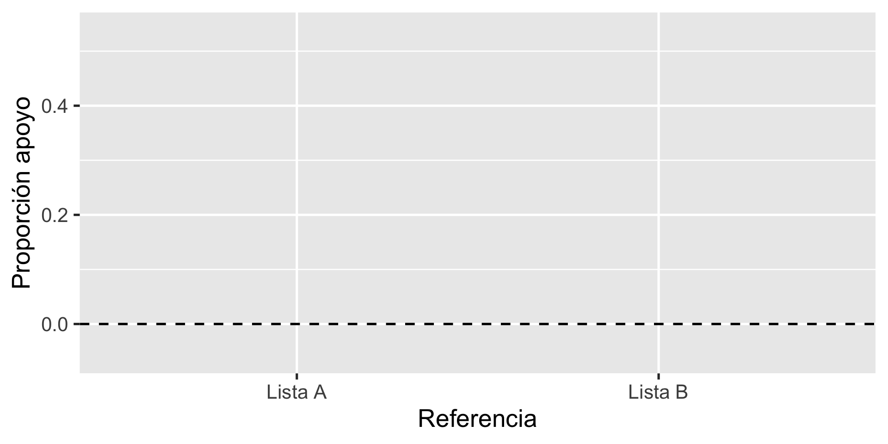
Gustavo Diaz
Northwestern University
gustavo.diaz@northwestern.edu
Paper y presentación: gustavodiaz.org/puc
Criminal Governance in Unexpected Contexts: the Role of the Welfare State in Latin America
Experimento de lista en Uruguay
Control con placebo arruinó resultados
Ideas de identificación parcial ayudan a recuperar estimaciones informativas
Diseño de experimentos de lista
Experimento fallido
Recuperando estimaciones informativas
Le voy a leer cosas que a algunas personas les molestan
Luego de que se las lea, dígame CUANTAS le molestan a usted
No me diga CUALES, solo dígame CUANTAS
No me diga CUALES, solo dígame CUANTAS
No me diga CUALES, solo dígame CUANTAS
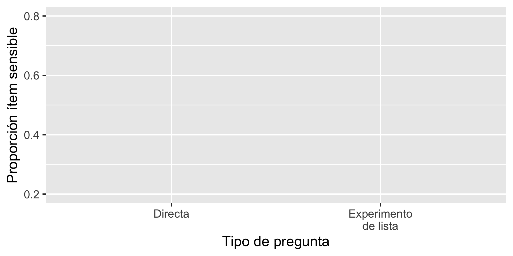
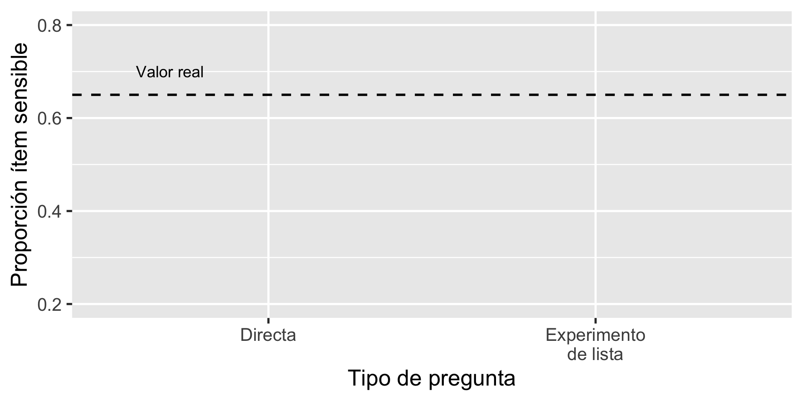
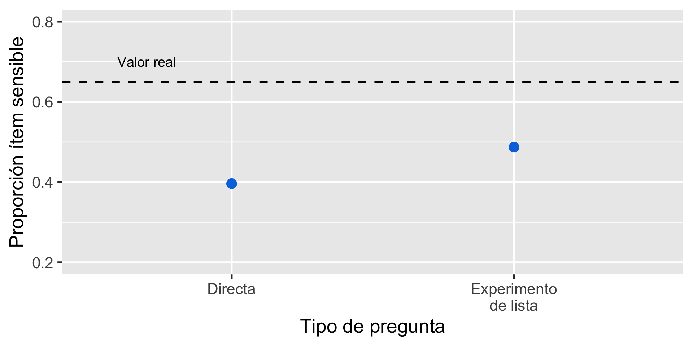
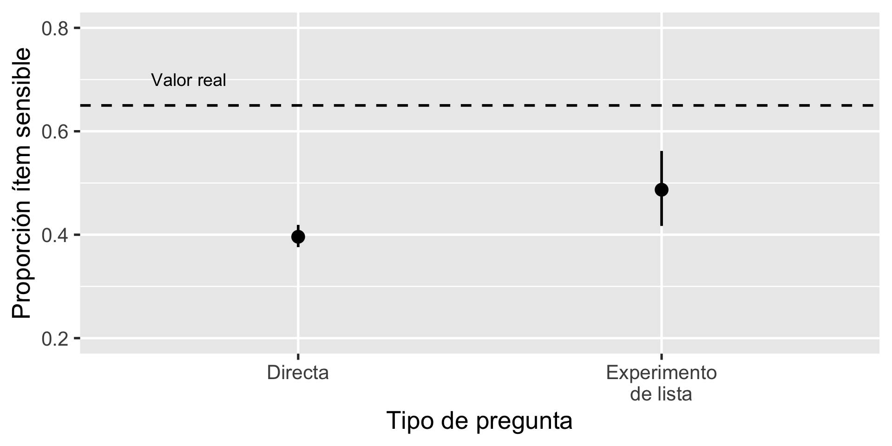
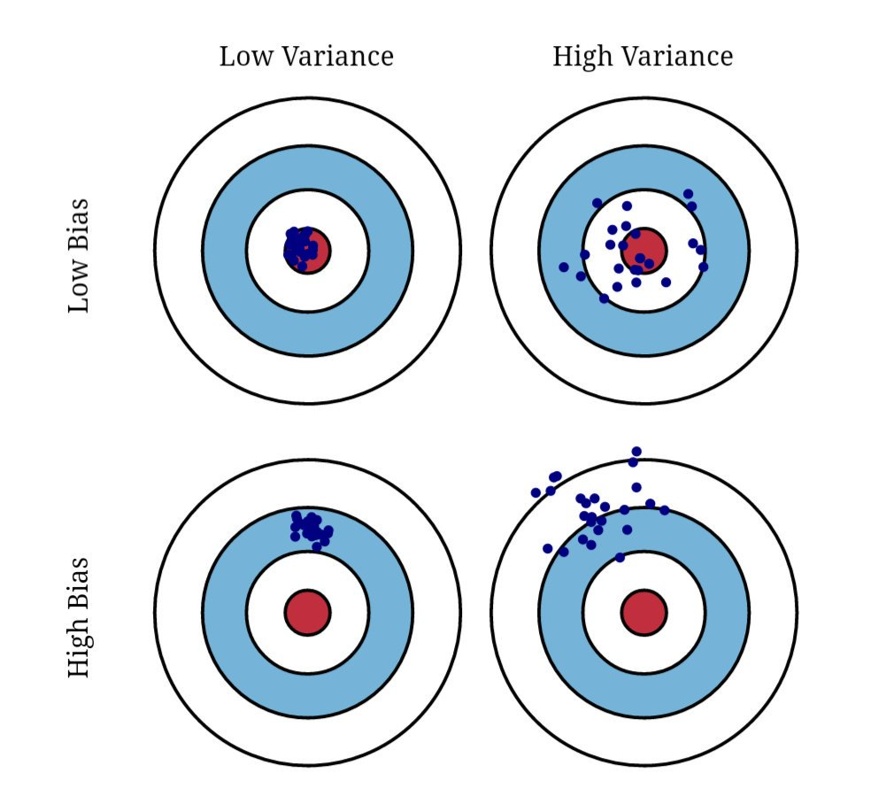
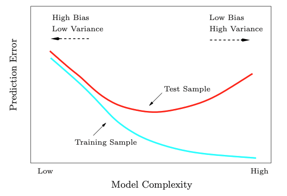
Resultados dependen de la lista base
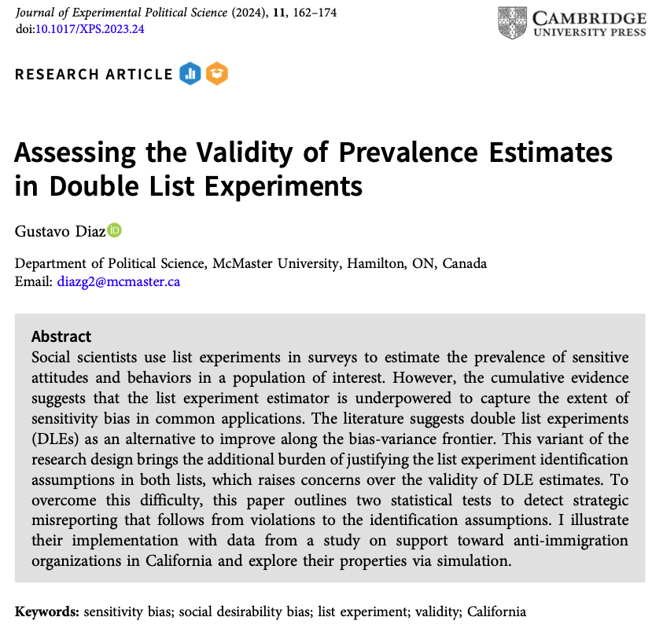
| Lista A | Lista B |
|---|---|
| Californians for Disability | American Legion |
| California National Organization for Women |
Equality California |
| American Family Association | Tea Party Patriots |
| American Red Cross | Salvation Army |
Ítem sensible: Citizen order patrol combating undocumented immigration

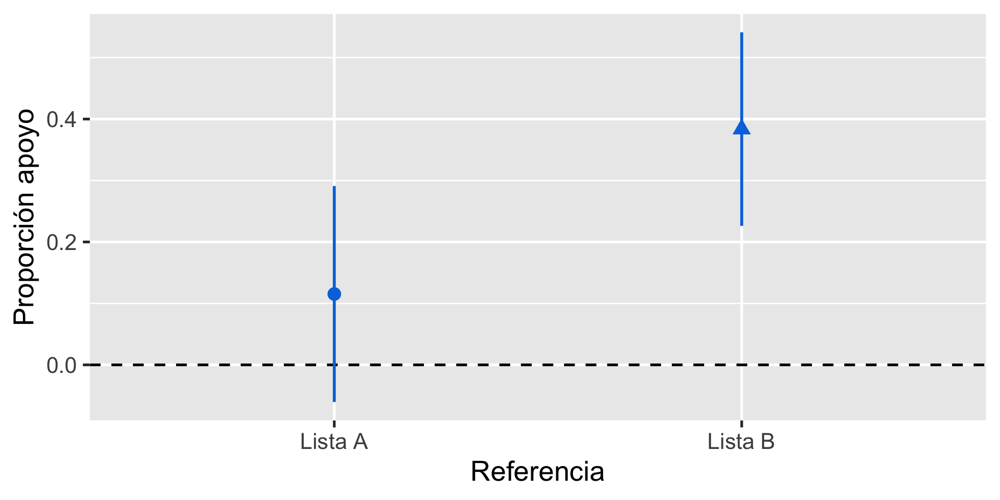
Resultados dependen de la lista base
Origen
Errores estratégicos
Errores no estratégicos
Resultados dependen de la lista base
Origen
Errores estratégicos
Errores no estratégicos
Cosas que molestan
| Control | Tratamiento |
|---|---|
| Gobierno sube el impuesto a la bencina | Gobierno sube el impuesto a la bencina |
| Futbolistas reciben salarios millonarios | Futbolistas reciben salarios millonarios |
| Empresas contaminan el medio ambiente | Empresas contaminan el medio ambiente |
| Familia venezolana se muda al lado |
Lista tratamiendo es más larga
Estimación positiva de manera artificial
Cosas que molestan
| Control | Tratamiento |
|---|---|
| Gobierno sube el impuesto a la bencina | Gobierno sube el impuesto a la bencina |
| Futbolistas reciben salarios millonarios | Futbolistas reciben salarios millonarios |
| Empresas contaminan el medio ambiente | Empresas contaminan el medio ambiente |
| Familia venezolana se muda al lado |
Solución: Añadir ítem placebo
Cosas que molestan
| Control | Tratamiento |
|---|---|
| Gobierno sube el impuesto a la bencina | Gobierno sube el impuesto a la bencina |
| Futbolistas reciben salarios millonarios | Futbolistas reciben salarios millonarios |
| Empresas contaminan el medio ambiente | Empresas contaminan el medio ambiente |
| Vagón del metro viene vacío | Familia venezolana se muda al lado |
Solución: Añadir ítem placebo
Ventaja
Reduce sesgo por inflación artificial de manera eficiente
Sólo 5/81 estudios desde 2014 usan este diseño
Mejoras en sesgo/varianza que no comprometen la otra dimensión imponen costos ocultos
Ítem placebo puede sustituir un tipo de sesgo por otro
Ha experimentado (en su barrio) en los últimos seis meses:
| Lista A | Lista B |
|---|---|
| Vi personas haciendo deporte | Vi personas jugando al fútbol |
| Visité amigos el fin de semana | Conversé con mis amigos |
| Participé en actividades organizadas por grupos feministas | Participé en actividades organizadas por grupos de la diversidad sexual |
| Participé en ceremonias religiosas | Participé en actividades solidarias en la iglesia |
Ítems sensibles:
Ítems sensibles:
Ítem placebo:
Ha experimentado (en su barrio) en los últimos seis meses:
| Lista A | Lista B |
|---|---|
| Vi personas haciendo deporte | Vi personas jugando al fútbol |
| Visité amigos el fin de semana | Conversé con mis amigos |
| Participé en actividades organizadas por grupos feministas | Participé en actividades organizadas por grupos de la diversidad sexual |
| Participé en ceremonias religiosas | Participé en actividades solidarias en la iglesia |
Ha experimentado (en su barrio) en los últimos seis meses:
| Lista A | Lista B |
|---|---|
| Vi personas haciendo deporte | Vi personas jugando al fútbol |
| Visité amigos el fin de semana | Conversé con mis amigos |
| Participé en actividades organizadas por grupos feministas | Participé en actividades organizadas por grupos de la diversidad sexual |
| Participé en ceremonias religiosas | Participé en actividades solidarias en la iglesia |
| Vi a miembros de bandas amenazar a vecinos | No tomé mate |
Ha experimentado (en su barrio) en los últimos seis meses:
| Lista A | Lista B |
|---|---|
| Vi personas haciendo deporte | Vi personas jugando al fútbol |
| Visité amigos el fin de semana | Conversé con mis amigos |
| Participé en actividades organizadas por grupos feministas | Participé en actividades organizadas por grupos de la diversidad sexual |
| Participé en ceremonias religiosas | Participé en actividades solidarias en la iglesia |
| No tomé mate | Vi a miembros de bandas amenazar a vecinos |
\[ \hat{\tau}_A = \widehat E[Y_{iA }(1)] - \widehat E[Y_{iA }(0)] \]
\[ \hat{\tau}_B = \widehat E[Y_{iB }(1)] - \widehat E[Y_{iB }(0)] \]
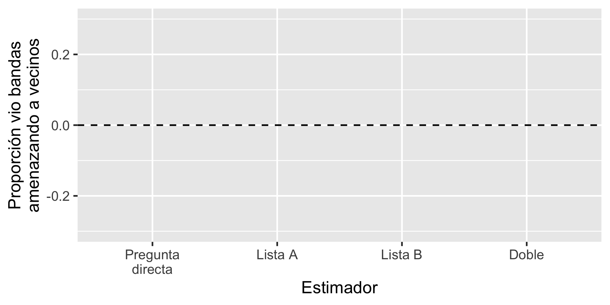
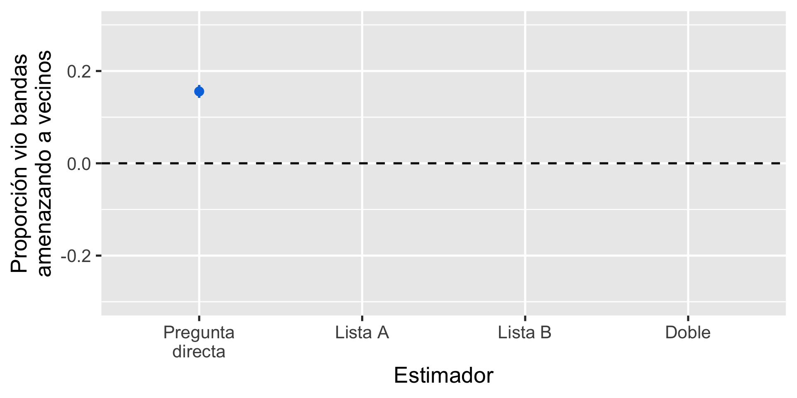
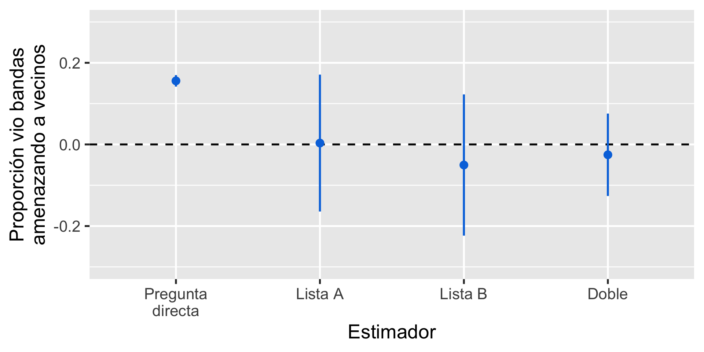
Prevalencia > 0
Falta de atención
LLama la atención
Problema: Estimación inválida
Idea: Imaginar cómo participantes habrían respondido sin el placebo
Equivalente a asumir que el estimando está identificado parcialmente
Permite construir cotas no-paramétricas
Asumen solo datos + diseño experimental (SUTVA)
Implica: Cambio solo en respuestas de control
Sharp bounds: Imputar valor mínimo/máximo posible
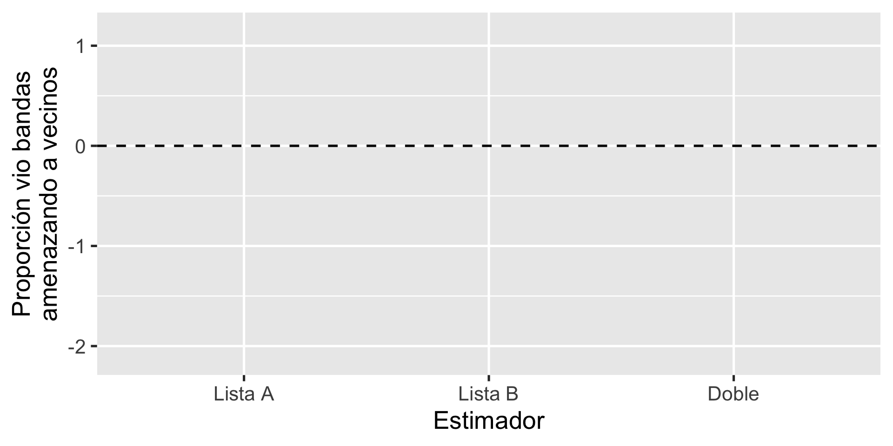
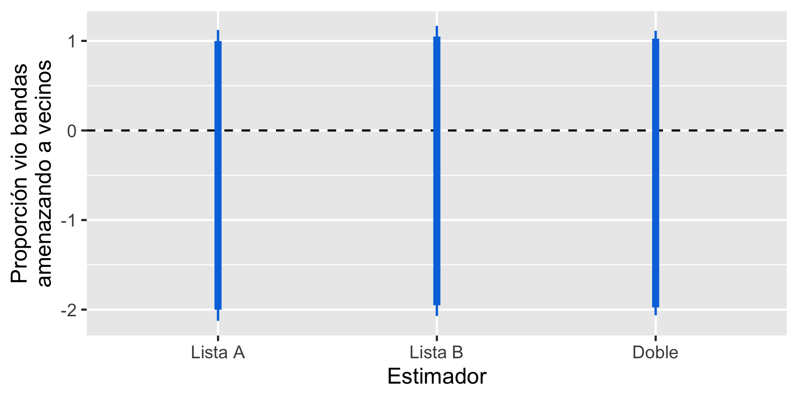
Supuestos de experimentos de lista
No liars: Participante no cuenta el ítem sensible si no aplica
No design effects: Añadir/remover ítem sensible no cambia la cuenta de la lista base
Implica:
Implica:
Cota inferior: Respuestas de 5 se vuelven 4
Cota superior: Respuestas de control -1 (truncado en 0)
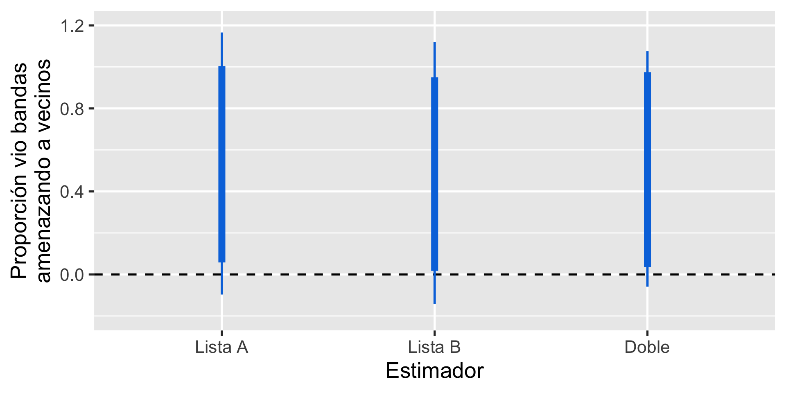
Cota inferior es conservativa
Cota superior es demasiado agresiva porque asume todos habrían cambiado su respuesta
Podríamos mejorar si supieramos:
Incorporar información auxiliar sobre placebo
Cota inferior: Respuestas de 5 se vuelven 4
Cota superior:
\[ \hat \tau_{H} = (1- \delta) \times \bar V_{obs} + \delta \times \bar V_{max} \]
\(\delta\): Proporción placebo auxiliar
\(\bar V_{obs}\): Estimación con datos observados
\(\bar V_{max}\): Estimación asumiendo todas las respuestas disminuyen
No tenemos información sobre el placebo
¡Pero podemos simular!
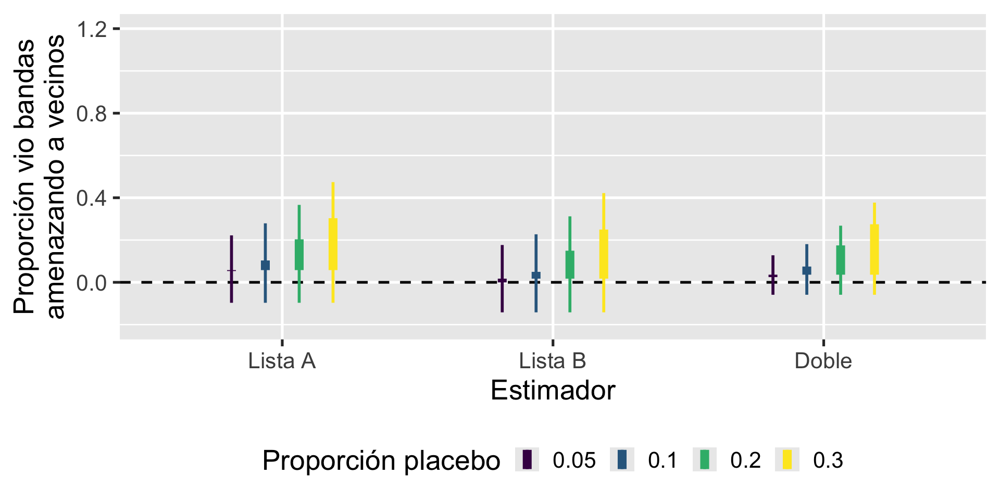
Refinamiento 3: Incorporar preguntas directas sobre ítem sensible
Validación: Signos zodiacales en China
Método basado en diseño para recuperar estimaciones informatives en experimentos de lista cuando el control con placebo falla
Basado en situación extrema
Herramienta para justificar diseño de lista
Reflejo de cómo usar propiedades estadísticas para informar diseño de investigación
¡Hacer preguntas directas de todo!
Contacto: gustavo.diaz@northwestern.edu
Información adicional: gustavodiaz.org/puc